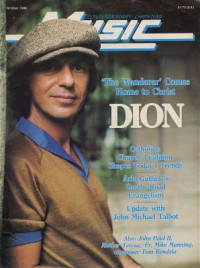

CMnexus
: Contemporary Christian culture, music, and media.
|
Dion DiMucciOn the cover
October 1980
Contemporary Christian Music | Media coverage:- Oct 1980 in Contemporary Christian Music "Inside Dion", by Karen Marie Platt
- Mar 1981 in The Saturday Evening Post "Rock of Ages", by Paul Baker
- May 1981 in Campus Life "Impressions: Dion DiMucci", by Jim Long
- Jul 1982 in Contemporary Christian Music "Cover Feature: Standing Firm And Sharing His Faith", by Paul Baker
- Feb 1986 in Christian Life "Dion: An Interview", by Patrick Kampert
- Nov 1986 in CCM "In Concert: Oshkosh Civic Auditorium, Oshkosh, WI", by Paul Cameron
- Feb 1987 in CCM "Notebook: Dion's Direct Approach", by Robyn Frazer
- Aug 1990 in CCM "In The News: New Directions", by Pat Curry
- Nov 2008 in Prism "Music Notes: From 'Wanderer' to 'Thunderer'", by J D Buhl
Albums & reviews:1963: Ruby Baby
1971: Sanctuary
1972: Suite for Late Summer
1975: Born To Be With You
1978: Only Jesus
1983: I Put Away My Idols
1984: Seasons
1985: Kingdom in the Streets
1990: Return of the Wanderer
1992: Dream on Fire
1995: A Rock & Roll Christmas
2000: King of the New York Streets
2000: Déjà Nu
2008: Heroes: Giants of Early Guitar Rock
2010: Born To Be With You [reissue]
Books about Dion DiMucci
- "Dion" in The Encyclopedia of Contemporary Christian Music (Mark Allan Powell, 2002).
|
|
<>